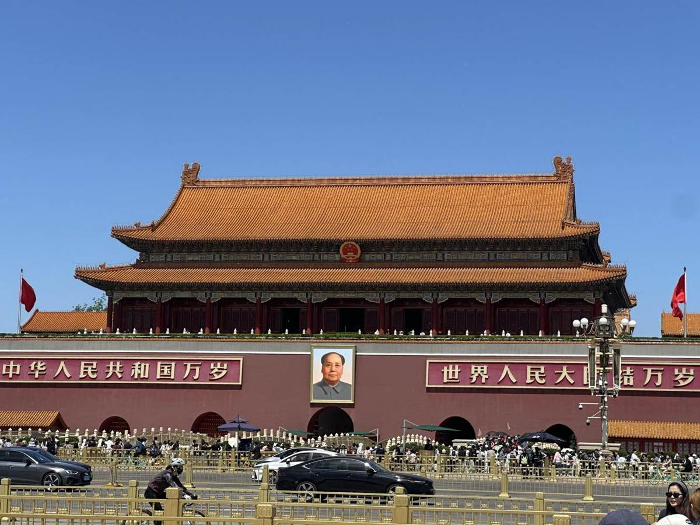

Taiwan i Palau
2025
Diaris de viatge
Índex
Català
Español
Quadern de viatge · 2025
Taiwan
i
Palau
Fotografies i records del viatge per Hong Kong, Taiwan, Palau i Beijing.
Els sis capítols
538 fotografies
01 / 06 · 42 fotos
Hong Kong
02 / 06 · 122 fotos
Sud i est de Taiwan
03 / 06 · 123 fotos
Palau
04 / 06 · 60 fotos
Oest de Taiwan
05 / 06 · 59 fotos
Taipei

06 / 06 · 132 fotos
Beijing
Mapa del recorregut
Veure a Google Maps ↗